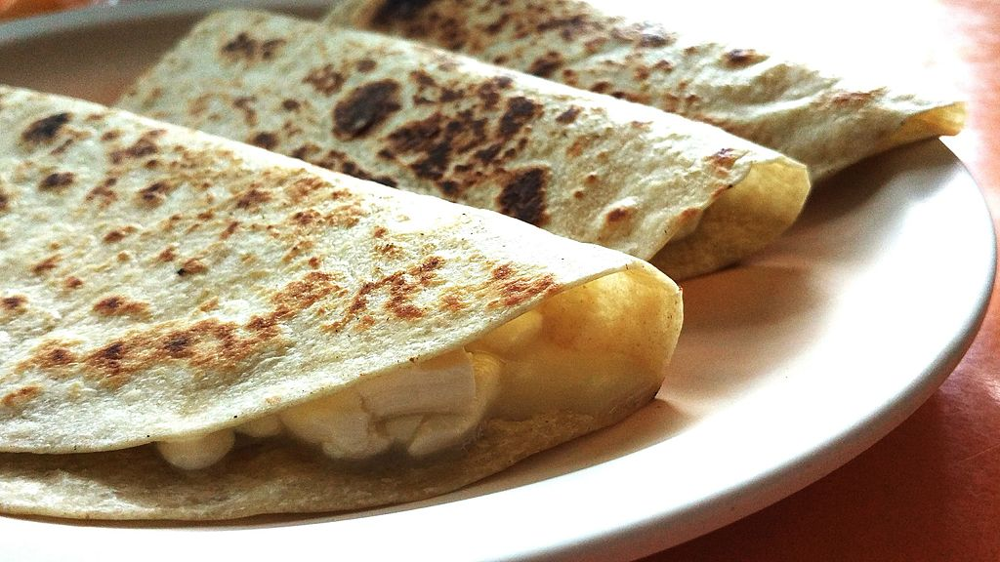

Apple, Spinach, Onion Quesadillas

Description
These quesadillas put a twist on the traditional recipe, introducing a mix of savory and sweet flavors.
Ingredients
- 2 Tortillas
- 1 Onion
- 1/2 Apple
- 1/4 lb Fontina Cheese
- 1 cup Spinach leaves
Directions
- Caramelize the onions in butter until browned and soft.
- Grate the cheese and slice your apples thin.
- Assemble your quesadillas: Apple, Cheese, Onion, then Spinach.
- Over medium heat, cook quesadillas until lightly crispy and somewhat browned. Serve with hot sauce and guacamole.